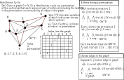
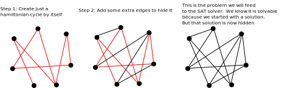
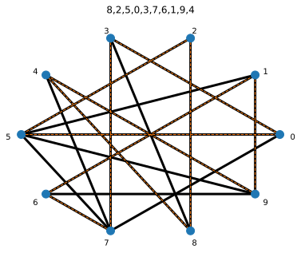
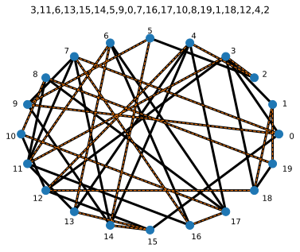
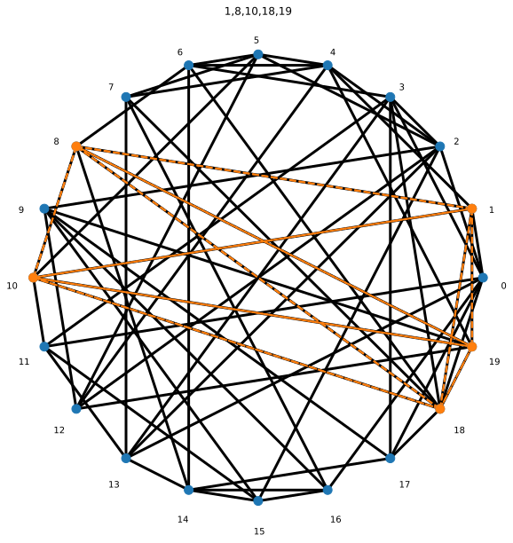
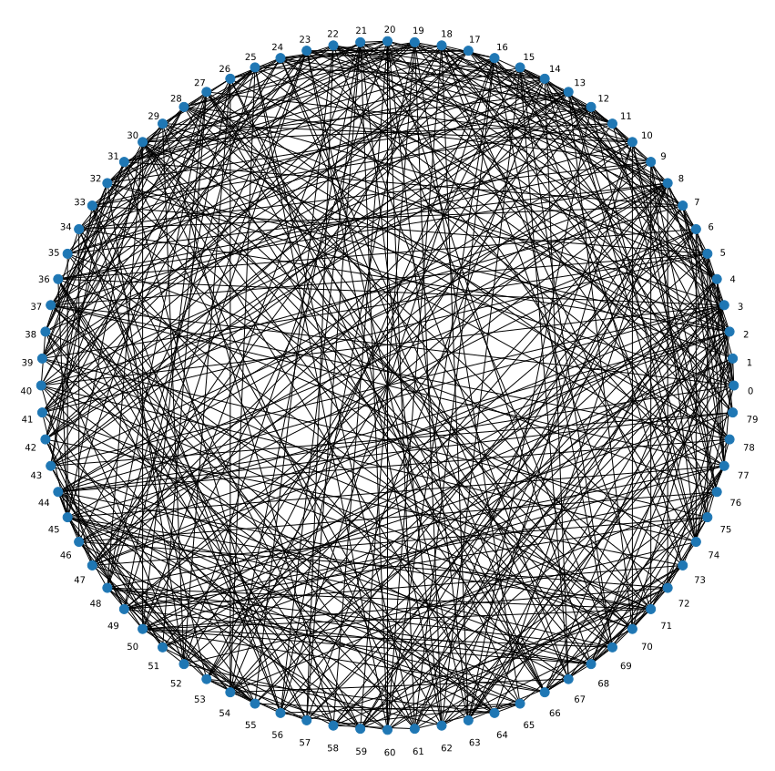
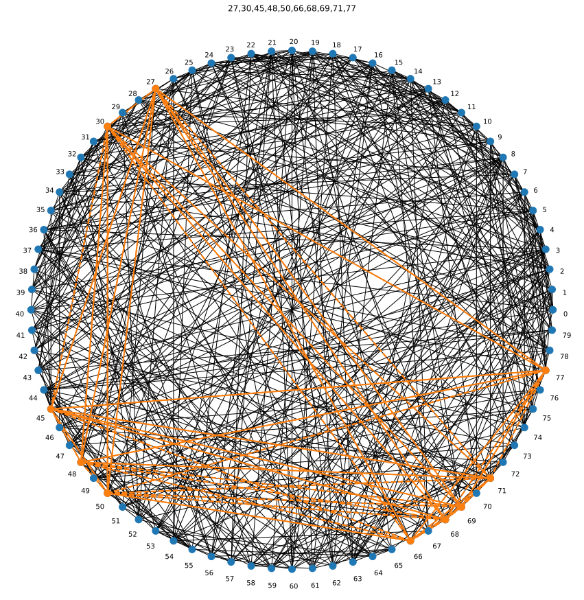
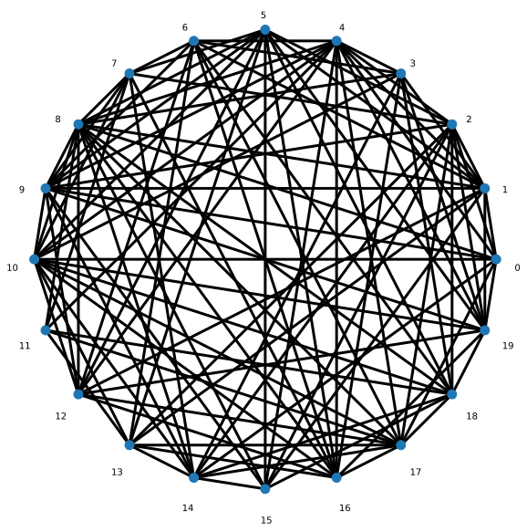
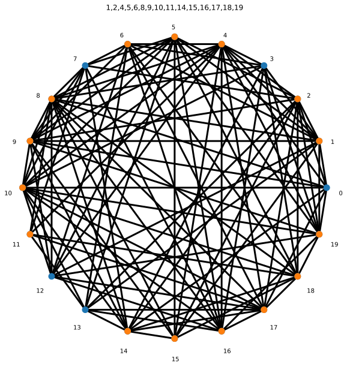

SAT Solvers: The Practical Side of The Cook-Levin Theorem
Chris Tralie
The Cook-Levin theorem states that SAT is NP-complete. This means we can reduce any problem in NP to SAT in polynomial time. This includes very difficult problems, such as other NP-complete problems.
While the proof of the Cook-Levin theorem uses Turing machine verifiers, there are often more direct ways to reduce a verifier to SAT. Below, I'll explore a few examples, which you can choose from in the final project. You are certainly free to choose other NP-complete problems; there are tons to choose from! Check out Karp's 21 classical problems, for instance. But if you want to do something I'm not describing below, run it by me so we can make sure it's feasible for the final project, since some of the reductions are a bit tricky in practice.
Hamiltonian Cycles

Here I'll summarize an example that I implemented in python for you already. You can find the code at this link. Below is a video I made walking through this, but I'll summarize the reduction in text in what follows
Generating Random Graphs Containing Hamiltonian Cycles
To generate a random Hamiltonian cycle, I first choose a random permutation using np.random.permutation. You can use this method in your random generation if it helps. I then add the V edges implied by this random permutation to ensure that there is a Hamiltonian cycle in the graph. Next, I add an additional O(V5/4) random edges to make the problem harder.
Below is a picture explaining this graphically. Code to do this can be found at this link

Here is an example with 10 vertices, with the certificate superimposed
Here is another example with 20 vertices
So how did we get these solutions? The notes below explain the reduction
Hamiltonian Path Certificate Generation
To convert reduce a Hamiltonian path problem into a CNF form, we can use O(V2) variables: one for each element in the permutation and one for each possible vertex choice at that permutation index. That is, xij = true if the ith element in the path is vertex j. Then, we enforce number of conditions by constructing O(V3) clauses:
1. Each Graph Vertex Must Appear in Exactly one Position
This breaks down into 3 different parts. Basically, we ensure that each row and each column have at least one 1 and at most one 1, together ensuring that each row/column has exactly one 1. This is an example of a doubly-stochastic matrix. Below are the 3 groups of CNF clauses that accomplish this:
-
Each path index
imust be occupied by at least one vertex. Written as an implication, this translates into\[ x_{ij} \implies \neg x_{ik}, \text{ for all } i, j, k, j \neq k \]Converting into CNF form, this is the clause
\[ (\neg x_{ij} \vee \neg x_{ik}), \text{ for all } i, j, k, j \neq k \]Note that there are O(V3) of these 2-element clauses
-
Each vertex
jmust appear at most once in the Hamiltonian path. Written as an implication, this translates into\[ x_{ij} \implies \neg x_{kj}, \text{ for all } i, j, k, i \neq k \]Converting into CNF form, this is the clause
\[ (\neg x_{ij} \vee \neg x_{kj}), \text{ for all } i, j, k, i \neq k \]Note that there are O(V3) of these 2-element clauses
-
Every index
ion the path must have at least one node\[ (x_{0,1} \vee x_{i,2} \vee ... \vee x_{i,V-1}) \text{ for } i = 0, 1, ..., V-1 \]must be part of the CNF formula for each j = 0, 1, 2, ..., V-1. The total size of all of these is O(V2)
Click here to see these implemented in code
2. The Edges on The Path Must Be Edges on The Graph
Finally, we'll add clauses that enforce that the edges chosen in the path are actually edges on the graph. In implication form, this can be written as
This translates into the following 2-element clauses
Notice that we had to be a bit tricky here since we need ORs in the CNF clauses instead of ANDs.
K-Clique
A k-clique in a graph is a set of k vertices with each pair connected by an edge in the graph. k-clique is NP-complete. The picture below shows a 5-clique in a graph with 20 vertices:
The graph below has 80 vertices and 502 edges (click here to download the edges). Can you find the 10-clique? 🤣
To hide the clique, I added random edges until the degree of each vertex was at least 10, and I expect you to do something similar in your implementation if you choose this problem. In this case, there are 80!/((70!)*(10!)) subsets of size 10, or over 1.6 trillion subsets we'd need to check in a brute force algorithm! But our framework can solve this problem more efficiently with the right SAT reduction:
How do we do this? The reduction is actually quite similar to hamiltonian cycle. For V vertices and a clique of size K, we'll create KxV variables. We can think of arranging these in a 2D array where each row is an index into the clique, and each column is a choice of vertex.
1. Exactly one 1 in each row/column
As before with Hamiltonian cycle, we'll enforce that there's exactly one 1 in each row/column. The only difference here is there are only K rows, and K is usually less than V
2. Clique uses only edges in the graph
We'll enforce this condition similar to before. For each edge (i, j) not in the graph, we'll make sure that no pair of rows has chosen both of these vertices. We can write this as follows
\[ x_{ki} \implies \neg x_{\ell j}, \text{ for all } (i, j) \notin E \text{ for all }, k \neq l \]
This is actually a quartic O(K2V2) blowup in the worse case where the number of edges E is O(V2), but this is still polynomial time.
Vertex Cover
A vertex cover of size k in a graph is a subset of k vertices so that every edge in the graph is adjacent to each one of these vertices. As an example, below is a graph with 20 vertices and 109 edges (Click here for the edges)
And below is a vertex cover of size 15 (there are multiple solutions in this case)
The reduction here is very similar to K-clique, but the edge enforcing conditions are even easier
1. Exactly one 1 in each row/column
This is exactly the same as in K-clique
2. Every edge is covered
For every edge (i, j), we want to make sure that either vertex i or vertex j is chosen in at least one row. This is simply
\[ (x_{0i} \vee x_{1i} \vee ... x_{K-1, i} \vee x_{0j} \vee x_{1j} \vee ... x_{K-1, j}) \]
for each edge (i, j)